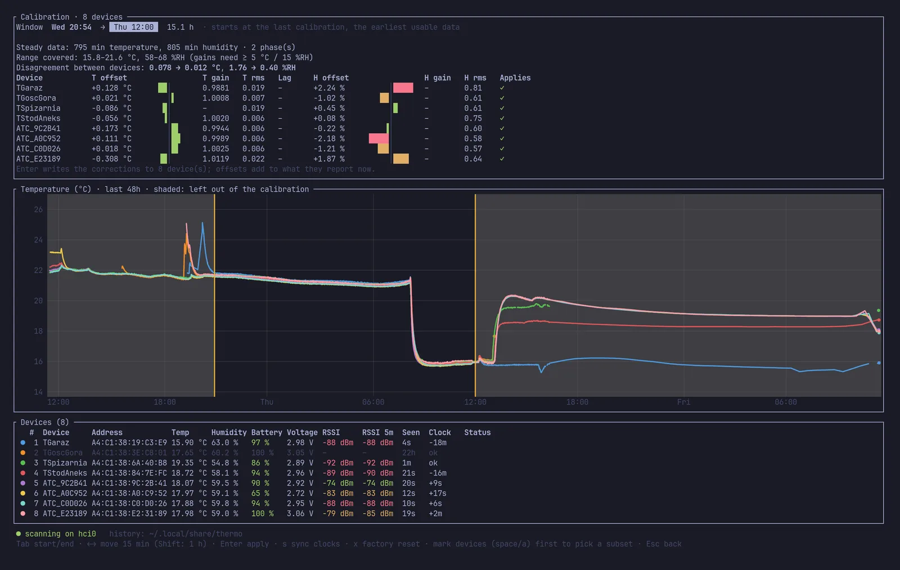

Guide
How to calibrate Xiaomi LYWSD03MMC thermometers
Five cheap Bluetooth thermometers in one room will show five different numbers. Here's why, what the pvvx firmware lets you fix, and how to fix a whole houseful at once without buying a reference instrument.
What the firmware can correct
The pvvx ATC_MiThermometer firmware converts each raw sensor value with a straight line, one for temperature and one for humidity:
temperature = raw × k_T + z_T
humidity = raw × k_H + z_HOut of the box k and z are the sensor datasheet's formula. Calibrating means changing them. That gives two knobs per quantity: the offset shifts the line, the gain tilts it. There's no curve, so a correction is always "multiply a little, then add a little". Both are written to flash over Bluetooth (command 0x25). The factory values come back with 0x26, or x in thermo.
Calibrating without a reference: consensus
If the thermometers sit in the same air, any disagreement between them is sensor error. So you can fit each device against the others. thermo takes the median of every other device as the reference, fits a gain and offset per device, and then shifts the whole set so that the gains average 1 and the offsets average 0. Each device ends up agreeing with the group's average.
Want absolute humidity? Put the thermometers in a sealed box with a dish of table salt wetted into a thick slush. The air above saturated NaCl settles at 75.3 %RH at room temperature (magnesium chloride: about 33 %RH). It's the classic cheap hygrometer check.
The procedure
- Side by side, at least 2 hours.
A few centimetres apart, not touching, away from radiators, sun, laptop exhaust and people. Keep thermo running and the computer awake: only live adverts are used.
- Move them all at once, at least 3 hours.
Somewhere at least 5 °C warmer or colder: outside in the shade, a cold room, a garage. thermo ignores the first hour after a big change while the cases catch up. It also drops readings above 95 %RH, so avoid fog and rain.
- Press c and choose the window.
Tab picks the start or end, ← → move it by 15 minutes (Shift: one hour). The chart shades what's left out. Check that two phases were found and that the gain columns show numbers, then press Enter and y.

Which range should you calibrate in?
For temperature, the width of the range matters more than where it sits. A gain fitted over 16–22 °C is practically as good at 25 °C as one fitted over 18–25 °C. The extra error a few degrees past the fitted range is around a hundredth of a degree. A wider span such as 8–22 °C (an afternoon outside) pins the gain down even better. These sensors are close to linear, so a gain fitted on a wide span holds well beyond it. thermo only fits a gain when the steady data spans at least 5 °C and the gain is clearly different from 1. Otherwise it writes only the offset.
Humidity is different. Humidity sensors are less linear, and outdoor air in autumn sits at 80–90 %RH while a heated home in winter sits at 30–45 %. A gain fitted between 60 and 90 % and used at 35 % reaches far outside its data. Calibrate humidity near where you live, add a dry point such as a magnesium chloride box, or settle for offsets. They matter most anyway. thermo asks for at least a 15 %RH span before fitting a humidity gain.
LYWSD03MMC units ship with different sensors. In one batch of eight, five had SHT4x-style factory coefficients (12500; −600) and three had SHT3x-style ones (10000; 0), and the two groups disagreed by more at high humidity than at low. thermo logs each device's old and new coefficients in calibrations.csv, and cargo run -p atc --example probe -- <MAC> prints them for one device.
How the fit works
All of this is plain, unit-tested Rust in crates/calibration, with no Bluetooth involved.
- Resample every device to 5-minute bins. Bluetooth reception is lossy, and finer bins would be mostly empty.
- Keep only steady data. A bin counts if, over 30 minutes, neither the group median nor the device moved more than 0.75 °C / 3.5 %RH, and the group didn't jump by 2 °C / 10 %RH in the hour before. Slow drifts, like a room cooling in the evening, are fine.
- Fit each device against the median of the others with a robust Huber regression. An extra term absorbs case lag: devices responded up to six minutes apart, which during a slow drift looks like a fake offset.
- Reject outliers. With four or more devices, one whose correction has a robust z-score above 3.5 is left out of the average, and nothing is written to it. Whatever set it apart probably skews both its temperature and humidity.
- Anchor the set so gains average 1 and offsets 0, then compose onto each device's current coefficients (
k′ = a·k,z′ = a·z + 100·b). The new values are read back to verify and logged. Calibrating again later builds on the last calibration.
The full write-up, including the firmware commands and what was found on real hardware, is in docs/calibration.md.
Two things learned on the way
- The device clocks are wrong. They count seconds since flashing until someone sets them. Once set, they gained about 30 seconds in a day and a half (≈ 200 ppm), because the chip keeps time with an RC oscillator while asleep. thermo maps downloaded log records to real time through each device's measured offset. Pressing s a day after the first sync also trims each clock's rate.
- Signal strength varies a lot between devices sitting side by side. −73 to −92 dBm on one table is normal: antenna orientation, the coin cell's shadow and reflections at 2.4 GHz all add up. That's why thermo shows a 5-minute median next to the latest reading.